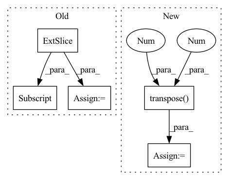

Pattern ID :613

Before Change
self.head = SVDHead(args=args)
def forward(self, src, tgt, T_gt=None, prefix="train"):
feat1 = src[..., :3].transpose(1, 2)
feat2 = tgt[..., :3].transpose(1, 2)
src = src[..., :3]
tgt = tgt[..., :3]
src_embedding = self.emb_nn(feat1)
tgt_embedding = self.emb_nn(feat2)
src_embedding_p, tgt_embedding_p = self.pointer(src_embedding, tgt_embedding)
src_embedding = src_embedding + src_embedding_p
tgt_embedding = tgt_embedding + tgt_embedding_p
scores = torch.matmul(src_embedding.transpose(2, 1).contiguous(), tgt_embedding) / math.sqrt(self.emb_dims)
scores = torch.softmax(scores, dim=2)
// b x points x points
feat1_corr = torch.matmul(feat2, scores.transpose(2, 1).contiguous())
rotation_ab, translation_ab = self.head(feat1, feat1_corr)
After Change
tgt_point = tgt
src = src.transpose(1,2).contiguous()
tgt = tgt.transpose(1,2).contiguous()
batch_size, _, _ = src.size()
src_embedding = self.emb_nn(src)
tgt_embedding = self.emb_nn(tgt)
src_embedding_p, tgt_embedding_p = self.pointer(src_embedding, tgt_embedding)
src_embedding = src_embedding + src_embedding_p
tgt_embedding = tgt_embedding + tgt_embedding_p
rotation_ab, translation_ab = self.head(src_embedding, tgt_embedding, src, tgt)
if self.cycle:
rotation_ba, translation_ba = self.head(tgt_embedding, src_embedding, tgt, src)
else:
rotation_ba = rotation_ab.transpose(2, 1).contiguous()
In pattern: SUPERPATTERN
Frequency: 3
Non-data size: 5
Instances
Fragment ID: 2195115
Project Name: paul007pl/mvp_benchmark
Commit Name: cb5622fec6ad947b57a83033563a402533978c61
Time: 2021-07-12
Author: panliang_de2007@qq.com
File Name: registration/models/dcp.py
M Class Name: Model
N Class Name: Model
M Method Name: forward(5)
N Method Name: forward(5)
M Parent Class: nn.Module
N Parent Class: nn.Module
M File Name: registration/models/dcp.py
N File Name: registration/models/dcp.py
M Start Line: 270
M End Line: 294
N Start Line: 394
N End Line: 425
'>
Before Change
attn = final_topk.softmax(dim=-1)
expanded_values = values[None, :, None, :, :].expand(b, -1, t, -1, -1)
expanded_indices = expand_dim(value_indices, dim=4, k=d_head, unsqueeze=True)
selected_values = expanded_values.gather(-2, expanded_indices)
out = (attn.unsqueeze(-1) * selected_values).sum(dim=-2)
out = out.transpose(1, 2).reshape(b, t, -1)
return self.to_out(out)
After Change
def forward(self, x):
b, t, e, h = *x.shape, self.heads
queries = self.to_queries(x)
queries = self.batch_norm(queries.transpose(1, 2)).transpose(1, 2)
queries = queries.chunk(2, dim=-1)
queries = torch.stack(queries).reshape(2, b, t, h, -1)
'>
Fragment ID: 2195123
Project Name: lucidrains/product-key-memory
Commit Name: 915dd922ef8e168f7970d5336d0ba79b4f57fe47
Time: 2020-06-06
Author: lucidrains@gmail.com
File Name: product_key_memory/product_key_memory.py
M Class Name: PKM
N Class Name: PKM
M Method Name: forward(2)
N Method Name: forward(2)
M Parent Class: nn.Module
N Parent Class: nn.Module
M File Name: product_key_memory/product_key_memory.py
N File Name: product_key_memory/product_key_memory.py
M Start Line: 36
M End Line: 71
N Start Line: 35
N End Line: 64
'>
Before Change
scene_2 = self.convScene_2(scene_1)
for i in range(dim_batch):
weight_read[i] = self.similarity(self.memory_past, state_past[:, i]).unsqueeze(0)
// weight_read[torch.arange(dim_batch)] = self.similarity(self.memory_past, state_past[:,torch.arange(dim_batch)]).unsqueeze(0)
index_max = torch.sort(weight_read, descending=True)[1].cpu()
After Change
// Cosine similarity
past_normalized = F.normalize(self.memory_past, p=2, dim=1)
state_normalized = F.normalize(state_past.squeeze(), p=2, dim=1)
weight_read = torch.matmul(past_normalized, state_normalized.transpose(0,1)).transpose(0,1)
index_max = torch.sort(weight_read, descending=True)[1].cpu()
for i_track in range(self.num_prediction):
'>
Fragment ID: 2195143
Project Name: marchetz/mantra-cvpr20
Commit Name: 433bba3b3cf57d5cf7723c46a7fcfd17c1bac858
Time: 2019-07-28
Author: fede.becat@gmail.com
File Name: models/model_memory_single.py
M Class Name: model_memory_single
N Class Name: model_memory_single
M Method Name: forward(3)
N Method Name: forward(3)
M Parent Class: nn.Module
N Parent Class: nn.Module
M File Name: models/model_memory_single.py
N File Name: models/model_memory_single.py
M Start Line: 118
M End Line: 139
N Start Line: 134
N End Line: 136